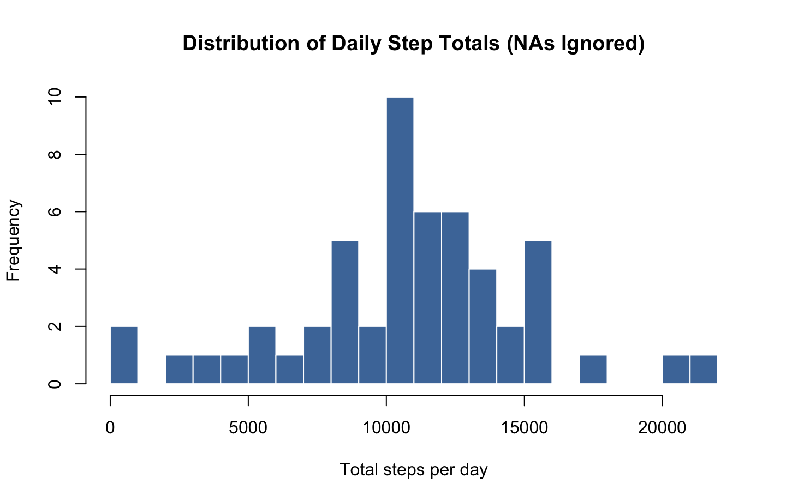
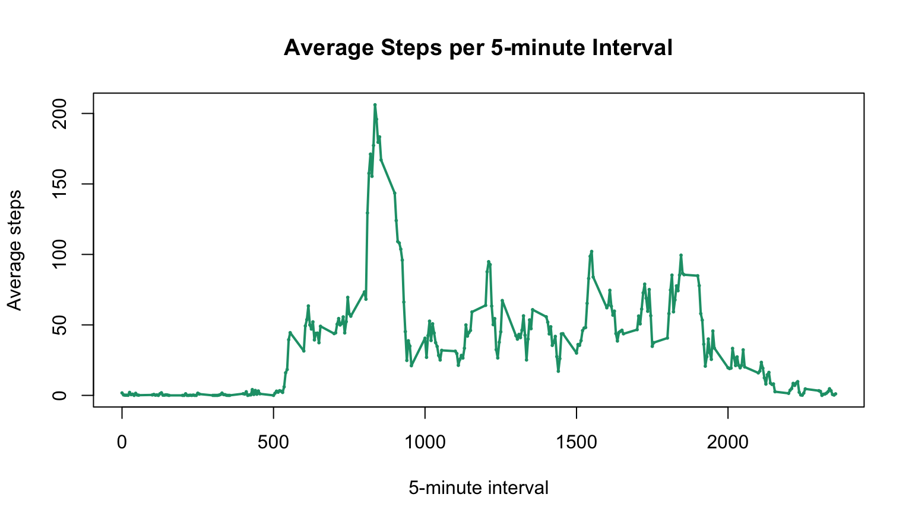
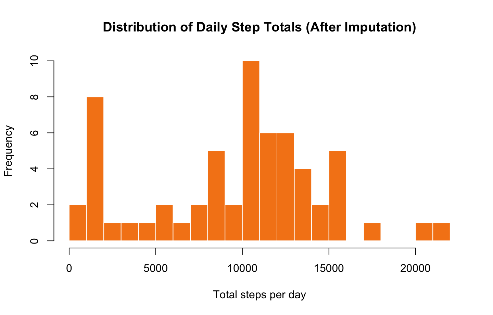
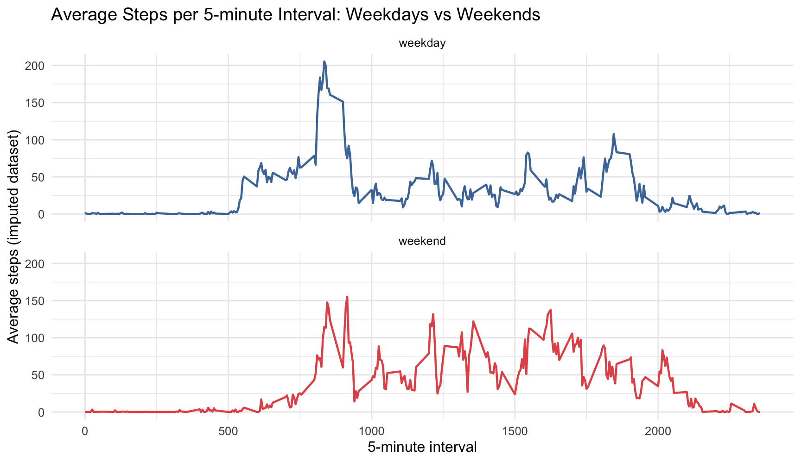

# Per instructions: activity.csv is in the same folder and not zipped
stopifnot(file.exists("activity.csv"))
dat <- read.csv("activity.csv", stringsAsFactors = FALSE)
# Parse/convert columns
dat$date <- as.Date(dat$date) # YYYY-MM-DD
dat$interval <- as.integer(dat$interval)
dat$steps <- as.numeric(dat$steps)
# Basic checks
str(dat)## 'data.frame': 17568 obs. of 3 variables:
## $ steps : num NA NA NA NA NA NA NA NA NA NA ...
## $ date : Date, format: "2012-10-01" "2012-10-01" ...
## $ interval: int 0 5 10 15 20 25 30 35 40 45 ...summary(dat)## steps date interval
## Min. : 0.00 Min. :2012-10-01 Min. : 0.0
## 1st Qu.: 0.00 1st Qu.:2012-10-16 1st Qu.: 588.8
## Median : 0.00 Median :2012-10-31 Median :1177.5
## Mean : 37.38 Mean :2012-10-31 Mean :1177.5
## 3rd Qu.: 12.00 3rd Qu.:2012-11-15 3rd Qu.:1766.2
## Max. :806.00 Max. :2012-11-30 Max. :2355.0
## NA's :2304head(dat, 10)## steps date interval
## 1 NA 2012-10-01 0
## 2 NA 2012-10-01 5
## 3 NA 2012-10-01 10
## 4 NA 2012-10-01 15
## 5 NA 2012-10-01 20
## 6 NA 2012-10-01 25
## 7 NA 2012-10-01 30
## 8 NA 2012-10-01 35
## 9 NA 2012-10-01 40
## 10 NA 2012-10-01 45For this part of the assignment, missing values in steps
are ignored.
dat_nonmissing <- dat[!is.na(dat$steps), ]
daily_totals <- aggregate(steps ~ date, data = dat_nonmissing, FUN = sum)
colnames(daily_totals) <- c("date", "total_steps")
head(daily_totals)## date total_steps
## 1 2012-10-02 126
## 2 2012-10-03 11352
## 3 2012-10-04 12116
## 4 2012-10-05 13294
## 5 2012-10-06 15420
## 6 2012-10-07 11015summary(daily_totals$total_steps)## Min. 1st Qu. Median Mean 3rd Qu. Max.
## 41 8841 10765 10766 13294 21194# Different look: colored histogram with borders
hist(
daily_totals$total_steps,
breaks = 18,
col = "#4C78A8", # blue fill
border = "white",
main = "Distribution of Daily Step Totals (NAs Ignored)",
xlab = "Total steps per day",
ylab = "Frequency"
)
mean_daily <- mean(daily_totals$total_steps)
median_daily <- median(daily_totals$total_steps)
mean_daily## [1] 10766.19median_daily## [1] 10765avg_by_interval <- aggregate(steps ~ interval, data = dat_nonmissing, FUN = mean)
colnames(avg_by_interval) <- c("interval", "avg_steps")
head(avg_by_interval)## interval avg_steps
## 1 0 1.7169811
## 2 5 0.3396226
## 3 10 0.1320755
## 4 15 0.1509434
## 5 20 0.0754717
## 6 25 2.0943396# Different plot style: base line + points, custom colors
plot(
avg_by_interval$interval,
avg_by_interval$avg_steps,
type = "l",
lwd = 2,
col = "#1B9E77", # green line
main = "Average Steps per 5-minute Interval",
xlab = "5-minute interval",
ylab = "Average steps"
)
points(
avg_by_interval$interval,
avg_by_interval$avg_steps,
pch = 16,
cex = 0.4,
col = "#1B9E77"
)
max_row <- avg_by_interval[which.max(avg_by_interval$avg_steps), , drop = FALSE]
max_row## interval avg_steps
## 104 835 206.1698n_missing <- sum(is.na(dat$steps))
n_missing## [1] 2304Strategy (different attempt): impute missing
steps using the median number of steps for
the same interval (calculated over all non-missing
observations). This is simple and robust to spikes.
median_by_interval <- tapply(dat$steps, dat$interval, median, na.rm = TRUE)
dat_imp <- dat
dat_imp$steps_imp <- dat_imp$steps
miss_idx <- is.na(dat_imp$steps_imp)
dat_imp$steps_imp[miss_idx] <- median_by_interval[as.character(dat_imp$interval[miss_idx])]
# Confirm imputation worked
sum(is.na(dat_imp$steps_imp))## [1] 0daily_totals_imp <- aggregate(steps_imp ~ date, data = dat_imp, FUN = sum)
colnames(daily_totals_imp) <- c("date", "total_steps_imp")
head(daily_totals_imp)## date total_steps_imp
## 1 2012-10-01 1141
## 2 2012-10-02 126
## 3 2012-10-03 11352
## 4 2012-10-04 12116
## 5 2012-10-05 13294
## 6 2012-10-06 15420summary(daily_totals_imp$total_steps_imp)## Min. 1st Qu. Median Mean 3rd Qu. Max.
## 41 6778 10395 9504 12811 21194hist(
daily_totals_imp$total_steps_imp,
breaks = 18,
col = "#F58518", # orange fill
border = "white",
main = "Distribution of Daily Step Totals (After Imputation)",
xlab = "Total steps per day",
ylab = "Frequency"
)
mean_daily_imp <- mean(daily_totals_imp$total_steps_imp)
median_daily_imp <- median(daily_totals_imp$total_steps_imp)
mean_daily_imp## [1] 9503.869median_daily_imp## [1] 10395impact <- data.frame(
Metric = c("Mean", "Median"),
Before_Impute = c(mean_daily, median_daily),
After_Impute = c(mean_daily_imp, median_daily_imp),
Difference = c(mean_daily_imp - mean_daily,
median_daily_imp - median_daily)
)
impact## Metric Before_Impute After_Impute Difference
## 1 Mean 10766.19 9503.869 -1262.32
## 2 Median 10765.00 10395.000 -370.00# Nicely printed table (still fully reproducible)
knitr::kable(impact, digits = 2)| Metric | Before_Impute | After_Impute | Difference |
|---|---|---|---|
| Mean | 10766.19 | 9503.87 | -1262.32 |
| Median | 10765.00 | 10395.00 | -370.00 |
Use the imputed dataset for this section.
# Locale-independent weekday/weekend classification:
# as.POSIXlt()$wday: 0 = Sunday, ..., 6 = Saturday
wday <- as.POSIXlt(dat_imp$date)$wday
dat_imp$day_type <- ifelse(wday %in% c(0, 6), "weekend", "weekday")
dat_imp$day_type <- factor(dat_imp$day_type, levels = c("weekday", "weekend"))
table(dat_imp$day_type)##
## weekday weekend
## 12960 4608avg_int_day <- aggregate(steps_imp ~ interval + day_type, data = dat_imp, FUN = mean)
colnames(avg_int_day) <- c("interval", "day_type", "avg_steps_imp")
head(avg_int_day)## interval day_type avg_steps_imp
## 1 0 weekday 2.02222222
## 2 5 weekday 0.40000000
## 3 10 weekday 0.15555556
## 4 15 weekday 0.17777778
## 5 20 weekday 0.08888889
## 6 25 weekday 1.31111111# Different plotting system + color scheme: ggplot2 facets
library(ggplot2)
ggplot(avg_int_day, aes(x = interval, y = avg_steps_imp, color = day_type)) +
geom_line(linewidth = 0.8) +
facet_wrap(~ day_type, ncol = 1) +
scale_color_manual(values = c("weekday" = "#4C78A8", "weekend" = "#E45756")) +
labs(
title = "Average Steps per 5-minute Interval: Weekdays vs Weekends",
x = "5-minute interval",
y = "Average steps (imputed dataset)",
color = "Day type"
) +
theme_minimal(base_size = 12) +
theme(legend.position = "none")